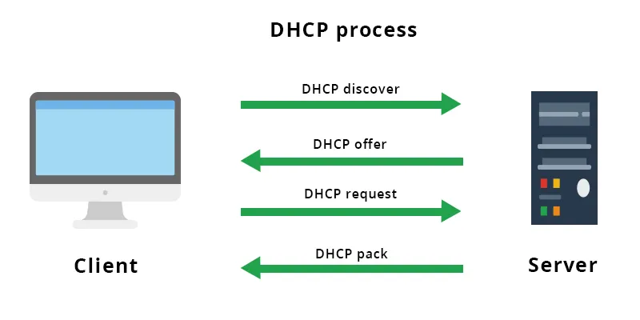

Analyse du besoin
Il y a neuf services chez Belletable (Commerciaux, Comptable, Service info, Vendeur, Direction, Accueil, Prestataires, RH, Logistique) et propose six VLAN pour segmenter le réseau : INFO, DIR-RH-COMPTA, COMMERCIAL, AUTRES, VISITEURS et DMZ. Les identifiants réseau sont organisés par Classe, Département, VLAN/Site et Hôtes, avec les cinq premiers VLAN en 10.0.0.0/24, la DMZ en 172.16.0.0/24 et le WAN en classe C, dans le but d'optimiser la sécurité et la gestion du réseau.
Documents administratifs
Selon Pierre Bartholi, directeur de Belletable, le système d'information de cette dernière
est obsolète et inadapté.
Plan d'adressage et schéma
Liste des adresses IP de 10.75.1.2 à 10.75.1.99, attribuées aux hôtes d'un réseau spécifique de Belletable, likely un VLAN (par exemple, INFO ou DIR-RH-COMPTA). Il s'inscrit dans un plan d'adressage réseau pour organiser les équipements connectés, sans fournir de détails sur la configuration ou l'infrastructure associée.
Planning prévisionnel et devis de la prestation
L'entreprise dispose d'un réseau informatique vieillissant et hétérogène. Le câblage réseau
est de catégorie 4 (UTP), limité à 10 Mb/s, avec de nombreuses prises RJ45 cassées ou
défectueuses. Le bâtiment est équipé de trois bandeaux de brassage de 24 ports, répartis
entre le rez-de-chaussée et le 1er étage.
Procédure
Les étapes incluent le renommage du serveur en "SRV-DHCP", la configuration de la carte LAN (IP 10.75.1.3/24, passerelle 10.75.1.254/24), l'installation du rôle DHCP, la création d'une étendue avec un DNS (10.75.1.9/24), l'intégration au domaine "belletable.lan", et la mise en place d'une redondance par basculement. Ce guide de 23 pages vise à structurer la gestion des adresses IP pour le réseau de Belletable.
Fiche de validation
L'étendue couvre les adresses 10.75.1.21 à 10.75.1.30, avec un masque 255.255.255.0, une passerelle à 10.75.1.254 et un DNS à 10.75.1.9, dans le domaine "belletable.lan". Le test sur "Client-01" valide les paramètres IP, masque, passerelle et DNS, sans réservation, avec une durée de bail par défaut.
